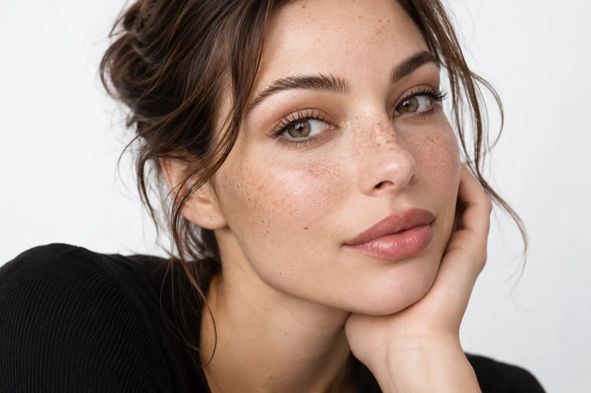

Makiažo nuotrauka vizažistui: tekstūra, atspalvis ir retušo ribos
Autorius: Madbeauty redakcija · Numatyta 2026 m. spalio 21 d. 10:00 (Lietuvos laiku)
Kaip iš nuotraukos perduoti makiažo kryptį, bet nesitikėti tikslios kopijos? Atskirsite, ką verta parodyti, ką apibūdinti žodžiais ir ką aptarti apie fotosesijos paslaugos apimtį.

Makiažo nuotrauka geriausiai veikia kaip krypties pavyzdys, o ne tiksli užduoties kopija. Pažymėkite, kas joje patinka — pavyzdžiui, švelnus šešėlio perėjimas ar matinis lūpų paviršius — ir atskirai įvardykite, ką norėtumėte pritaikyti sau. Nuotrauka viena pati nepasako, kaip toks vaizdas atrodys kitoje šviesoje, ant kito veido ar po retušo.
Kas nuotraukoje patinka
Prieš siųsdami pavyzdį, išskaidykite jį į konkrečias detales. Ar patinka bendras įvaizdžio intensyvumas, spalvų šeima, antakių forma, šešėlio kraštas, odos paviršius ar lūpų tekstūra? Pasirinkite vieną pagrindinę nuotrauką ir, jei reikia, pridėkite atskirą detalės vaizdą. Kelios skirtingos nuotraukos gali rodyti nesuderinamus norus, todėl prie kiekvienos parašykite, kurią savybę iš jos norite aptarti.
- Palikti: viena ar dvi konkrečios detalės, kurias norite išsaugoti, pavyzdžiui, švelnų akių makiažo perėjimą.
- Pritaikyti: kas turėtų keistis atsižvelgiant į jūsų bruožus, aprangą ar renginio pobūdį.
- Vengti: aiškiai įvardykite tai, ko nenorite, pavyzdžiui, ryškaus blizgesio ar labai tamsaus kontūro.
Iliustracinis pavyzdys, ne kliento atvejis: „Patinka šiltas akių šešėlių perėjimas ir natūralios išvaizdos antakiai. Norėčiau ramesnių lūpų, o blizgaus paviršiaus vengčiau.“ Toks aprašas nusako pageidaujamą kryptį, bet neįpareigoja atkartoti konkrečios nuotraukos.
Apšvietimas ir retušas
Nuotraukoje matomą atspalvį ir odos tekstūrą gali veikti apšvietimas, kameros nustatymai ir redagavimas. Todėl ekrane matomos spalvos nelaikykite tiksliu produkto ar galutinio rezultato kodu. Jei svarbi konkreti savybė, apibūdinkite ją žodžiais: pavyzdžiui, ar norite šiltesnio ar šaltesnio įspūdžio, ryškesnio ar santūresnio makiažo.
Retušuotame vaizde gali būti sunku atskirti, kuri odos išvaizdos dalis susijusi su makiažu, o kuri — su šviesa ar nuotraukos redagavimu. Jei nuotraukoje patinka labai vientisas paviršius, aptarkite, kokio realistiško rezultato tikitės ir kokio retušavimo pageidaujate fotosesijos nuotraukose. Makiažas ir vėlesnis nuotraukų redagavimas yra atskiri susitarimai.
Rezultato užduotis realiame kontekste
Nuotrauką vertinkite kartu su situacija, kuriai ruošiatės. Pasakykite, ar makiažas skirtas dienos šviesai, renginiui, portretui ar kitam fotosesijos formatui, kokia bus apranga ir kokio bendro įvaizdžio siekiate. Tai padeda aptarti pasirinkimus; vien nuotrauka nenustato, kas jums tiks ar kokia paslauga bus reikalinga.
Taip pat galite paprašyti parodyti, kurios nuotraukos meistro galerijoje geriausiai atspindi jums rūpimą detalę. Peržiūrėdami galeriją atkreipkite dėmesį, ar matyti panašūs makiažo pavyzdžiai ir ar galima įvertinti būtent jums svarbią tekstūrą ar spalvų kryptį. Plačiau apie tai, kaip vertinti pavyzdžius, rašome gide Kaip vertinti meistro darbų galeriją.
Makiažas fotosesijai: metodo paskirtis ir konkreti paslaugos apimtis
Pavadinimas „makiažas fotosesijai“ nusako paskirtį, bet pats savaime nepaaiškina visos paslaugos sudėties. Prieš pasirinkdami išsiaiškinkite, ar įtraukiamas bandomasis vizitas, blakstienų uždėjimas, atvykimas, makiažo pataisymas ar nuotraukų retušas. Tai skirtingi darbai, o konkretūs įtraukimo ir kainos klausimai priklauso nuo pasirinkto teikėjo pasiūlymo.
Kai žinote, kokios paslaugos ieškote, galite peržiūrėti nacionalinį pasirinkimą Makiažas fotosesijai ir aiškiai pasirinkti miestą. Katalogo pasirinkimas savaime nepatvirtina, kad jame šiuo metu yra teikėjų ar laisvų laikų.
Planuojamos vidinės nuorodos
Šaltiniai peržiūrai
- Nuotraukų spalva ir baltos spalvos balansas — Read actual Adobe Camera Raw documentation, Color panel section: ambient light/flash can cast colour; white balance, temperature and tint adjust rendered colours. Supports only ordinary photographic colour uncertainty, not skin suitability, product identification or scientific experiment. Derive at most25 words in the photo-reference article.
- Portreto odos tekstūros retušavimas — Read actual Adobe Photoshop Express Smooth Skin document updated2026-08-18: editing adjusts visible skin tone/texture and excess smoothing can appear unrealistic. Only photographic interpretation; no medical or product-effectiveness assertion and no claim that a particular provider photo was retouched. Derive at most25 words.